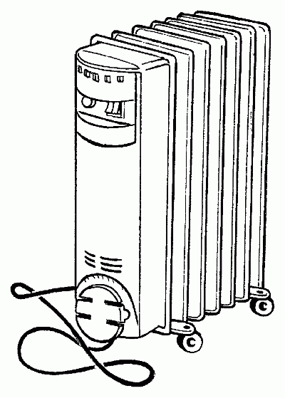
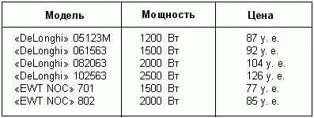
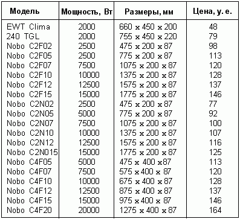
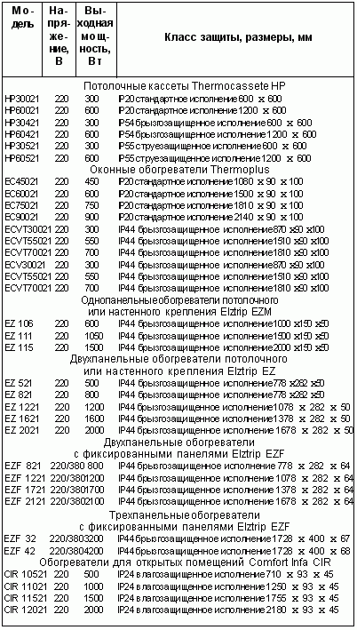

Виды электрических обогревателей.

Все электрические обогреватели можно разделить на несколько группы:
– масляные радиаторы;
– конвекторы;
– тепловентиляторы;
– инфракрасные кварцевые излучатели.
Все они работают от электрической сети.
Масляные радиаторыМасляные радиаторы – самый распространенный вид электрообогревателей. Из всех электрических обогревателей радиаторами называется только эта группа. Вообще радиатор – это какая-либо емкость, наполненная жидкостью (водой или маслом), которая и является греющим элементом.
Масляные радиаторы распространяют тепло за счет нагревания маслом металлической поверхности и рассеивают тепло во все стороны.
Такие радиаторы представляют собой электриче-скую батарею, заполненную маслом вместо воды (рис. 15).

Рис. 15. Масляный радиатор
Приборы имеют такие же металлические ребра, как обычные радиаторы центрального отопления. Нагрев помещения происходит постепенно, однако теплее всего непосредственно около обогревателя.
Достоинства масляных радиаторов:
– пожаробезопасность;
– быстрый и качественный нагрев воздуха;
– термостат и таймер, благодаря которым некоторые модели не требуют отключения.
Недостаток:
– температура поверхности 110–150° С не позволяет свободно дотронуться до прибора и располагать его рядом с легкоплавкими предметами.
Масляный радиатор серии Н19 фирмы «De Longhi» – первый шаг специалистов к совершенствованию обогревательных систем. Этот радиатор имеет температуру поверхности 110° С. Такой результат удалось получить благодаря специальным термическим щелям на ребрах прибора. Ведь раньше в подобных приборах первого поколения, где грани были сплошными, температура достигала 150° С.
У этой модели имеется термостат – устройство, которое позволяет устанавливать и поддерживать заданную температуру.
Существуют масляные радиаторы с таймером, например, некоторые модели из серии «Рапидо» от «De Longhi». Аппарат будет включаться и выключаться в строго заданное время, за 1 час до вашего прихода с работы и через 15 минут после ухода. Такой обогреватель с таймером можно вообще не отключать.
В обогреватель «Рапидо» специалисты внесли несколько изменений. Во-первых, изменилась форма радиатора. Ребристую угловатость заменили плоскими вертикальными каналами, которые создают «каминный» эффект (то есть высокую скорость выхода теплого воздуха). Таким образом, подача тепла увеличилась за счет пирамидальной формы секций и конвекционных каналов. Секции радиатора спроектированы так, чтобы максимально увеличить скорость потока теплого воздуха.
Во-вторых, внутри прибора теперь установлен дополнительный греющий тэновый элемент, который резко повысил силу и качество процесса нагревания воздуха.
Несмотря на усиление обогрева, температуру на поверхности радиатора сумели сохранить на уровне 110° С, (раньше она была 150° С). Но прикасаться к горячему прибору все равно небезопасно. Однако это единственный недостаток такого обогревателя. Кроме того, в отличие, например, от тепловентиляторов масляные радиаторы абсолютно бесшумны.
Правда, почти у каждой фирмы-производителя есть модель, в которой сочетаются два способа обогрева. Например, в модель «Радиа» фирмы «De Longhi» встроен вентилятор. Это дает возможность почти моментально нагреть воздух в помещении за счет включения сразу двух устройств.
В табл. 1 приведены наиболее популярные модели масляных радиаторов.
Таблица 1. Модели масляных радиаторов
Ухаживать за радиатором довольно просто, он не требует специального технического обслуживания. Нельзя использовать для очистки абразивные материалы и растворители.
Пыль нужно стирать мягкой сухой тряпкой, предварительно выключив прибор из розетки и дождавшись, пока он остынет.
Не используйте прибор в ванной комнате, душе или в бассейне: это электрический прибор, и во влажном помещении его лучше не ставить.
Не используйте обогреватель для сушки белья: горячий воздух не сможет свободно подниматься, возможен перегрев прибора.
Не стоит класть шнур питания на горячий обогреватель: пластиковая оболочка шнура может расплавиться.
Прибор должен находиться в строго вертикальном положении: он устроен так, что греющий элемент находится внизу и рассчитан на определенное количество и давление масла.
Из-за высокой температуры на поверхности (110–150° С) прибор должен находиться подальше от легкоплавких изделий и на расстоянии не ближе 50 см от мебели и других предметов.
Не используйте прибор в помещении площадью менее чем 4 х 2 м: излучение тепла радиатора даже с самым небольшим количеством секций не рассчитано на маленькие помещения.
Не используйте удлинитель: во время работы прибора он может перегреться.
Электромасляные плинтусные обогревателиВ некоторые помещения небольшого размера, например в ванную комнату или на лоджию, нельзя ставить обычный обогреватель – это неудобно или небезопасно.
В таком случае советуем приобрести плинтусный обогреватель из серии НВВ фирмы «Q-Mark». Он представляет собой длинную узкую панель, которая крепится непосредственно к плинтусу и занимает мало места.
Эти приборы имеют нагревательный элемент – ТЭН, полностью погруженный в теплопроводящую масляную жидкость. За счет этого аппарат качественно и быстро нагревает воздух. Такой обогреватель считается пожаробезопасным, поэтому его можно устанавливать на пол с любым покрытием.
Прибор оснащен термостатом, позволяющим устанавливать любую температуру, а также режим «антифриз», с помощью которого можно уберечь помещение, например, гараж, от мороза.
КонвекторыГреющие элементы этого прибора – ТЭНы, стальные изогнутые проволоки в защитном и одновременно греющем металлическом корпусе. Конвекторные обогреватели распространяют тепло за счет естественной конвекции, когда нагретый воздух поднимается вверх, уступая место холодному.
Достоинства конвекторов:
– пожаробезопасны;
– бесшумны;
– благодаря термостату могут регулировать установленную температуру и не требуют отключения.
Недостаток:
– без встроенного вентилятора сравнительно медленно нагревают воздух.
Существуют напольные и настенные конвекторы. Различаются они между собой лишь по дизайну и месту расположения. Конвекторы лучше всего размещать под окнами, так как с точки зрения теплотехники окна зимой – это практически дыры в помещении. В отличие от толстых стен два тонких стекла с воздушной подушкой между ними очень сильно растрачивают домашнее тепло.
К напольным конвекторам можно отнести модели CS 20S фиомы «Stiebel Eltron» и НN 20 F фирмы «De Longhi».
Удобнее, наверное, использовать настенные модели – EP 200 S Turbo от «De Longhi» и CNS от «Stiebel Eltron», так как они занимают не очень много места и внешне выглядят неплохо.
Другое дело, что все конвекторные обогреватели не смогут быстро нагреть холодное помещение. Эти приборы удобны для поддержания необходимой температуры дома благодаря встроенному термостату, такому же, как и в масляных радиаторах. Термостат будет повышать или понижать температуру. Например, у обогревателей «Stiebel Eltron» есть термостат с автоматической программой.
Если заданная на термостате температура 22° С неожиданно начинает повышаться, радиатор автоматически отключается и снова включается, если температура в помещении понизилась.
Конвекторы – абсолютно бесшумные приборы. За исключением моделей серии ЕР и НN 20 F фирмы «De Longhi», в которые встроен вентилятор для наиболее быстрого нагрева помещения. В этом случае включенный конвектор будет слегка шуметь.
Прибор CNS от «Stiebel Eltron» считается пожаробезопасным: ТЭН заключен в металлическую трубку, которая, в свою очередь, в скрыта в таком же надежном корпуса. Единственная опасность может исходить от неисправной проводки.
Наиболее популярные модели конвекторов приведены в табл. 2.
В отличие от масляных радиаторов, до конвектора можно спокойно дотронуться – он не слишком горячий.
Правила техники безопасности при эксплуатации конвекторовУдалять пыль следует мягкой сухой тканевой салфеткой, предварительно выключив прибор из розетки и дав ему остыть. Специального ухода не требует.
Не используйте конвектор для сушки белья: горячий воздух не сможет свободно подниматься, возможен перегрев прибора.
Конвектор нельзя ставить непосредственно под электрической розеткой.
Не используйте удлинитель: во время работы прибора он может перегреться.
Не накрывайте ничем работающий прибор – это может привести к опасному перегреву.
Таблица 2. Модели конвекторов
Способ устройства тепловых вентиляторов примерно такой же, как и у конвекторов, но вместо тэнового прута греющим элементом является тонкая металлическая спираль. Место конвекции занимает вентилятор.
Тепловые вентиляторы распространяют тепло от раскаленной металлической спирали и рассеивают согретый ею воздух с помощью вентилятора. Принцип работы такой же, как у фена для сушки волос.
Достоинства тепловых вентиляторов:
– очень быстро нагревают воздух;
– защищены от перегрева;
– благодаря термостату автоматически регулируют установленную температуру и не требуют отключения;
– отключаются в случае падения.
Недостатки:
– издают характерный жужжащий звук;
– попавшая на спираль пыль, сгорая, может издавать неприятный запах.
Тепловентилятор CHZ 20 S secavent компании «Stiebel Eltron» можно установить на полу или прикрепить к стене. Этот обогреватель снабжен дополнительным реле вертикального положения, которое отключает прибор, если он случайно опрокинется.
Есть и настенные тепловентиляторы, например модель СK 20 S Euro той же фирмы. Такие приборы хорошо подходят для помещения, где необходимо временное отопление. Элегантная модель прекрасно вписывается в любой интерьер. Мощность отопления регулируется термостатом. Но главное, что этот прибор совершенно бесшумный.
Еще существуют настольные тепловентиляторы, например, модель НТE производства компании «De Longhi». Приборы удобные и небольшие. Специальный термопредохранитель защищает аппарат от перегрева. Также большинство современных тепловентиляторов имеют специальную защиту от случайного попадания воды. В свое время существовала одна серьезная проблема: раскаленная металлическая спираль «съедала» кислород. Во всяком случае, так всегда было с нашими отечественными аппаратами. Так вот, новые технологии позволили решить эту проблему: тепловентиляторы нового поколения успевают нагреть воздух очень быстро.
Правила техники безопасности при эксплуатации тепловых вентиляторовЕсли на раскаленной спирали, даже сквозь надежную решетку, постепенно начнет скапливаться пыль, может появиться неприятный запах. Поэтому нужно почаще протирать прибор сухой тряпкой, предварительно выключив его.
Нельзя класть шнур питания на горячий обогреватель.
Нельзя устанавливать прибор в помещениях повышенной влажности, избегайте попадания струи воды на раскаленную спираль.
Не используйте удлинитель: во время работы прибора он может перегреться.
Не накрывайте ничем работающий прибор: обогреватель может перегореть.
Инфракрасные излучателиПриборы, предназначенные для передачи тепла путем излучения нагретой поверхностью лучей длинноволнового спектра, называют инфракрасными. Именно такой диапазон тепловых волн излучают солнце, нагретый морской песок, камин, костер и любое теплокровное существо, включая человека.
Инфракрасные кварцевые излучателиГреющий элемент инфракрасных кварцевых излучателей – кварцевая лампа в виде длинной трубки, защищенной металлическим корпусом. Инфракрасный кварцевый излучатель, в отличие от других приборов, нагревает не воздух, а определенную поверхность или предмет, на который направлен луч лампы.
Инфракрасный кварцевый излучатель IW 20 компании «Stiebel Eltron» идеально подходит, если нет необходимости нагревать все помещение. Инфракрасный луч, благодаря поворотному рефлектору, будет поворачиваться на 20–40ои надежно согревать вас. Этот прибор защищен от случайных брызг воды, абсолютно бесшумен и пожаробезопасен. В принципе кварцевый излучатель подходит больше для временного обогрева в случае, если не нужно отапливать помещение целиком.
Так же, как и солнце, инфракрасный обогреватель дарит тепло всему, что его окружает: людям, предметам меблировки, стенам, полам и прочим поверхностям. Этот вид энергии подобен солнечному свету и поэтому доходит до потребителей почти без потерь. Вдобавок в отличие от привычных для нас батарей-радиаторов эти источники тепла направляют электроэнергию на прямой обогрев предметов без использования промежуточных носителей тепла (вода, масло, пар и т. д.). При этом за счет прямого поглощения энергии от инфракрасного обогревателя человек в зоне его действия будет чувствовать себя комфортно при средней температуре на 2–3° C ниже оптимальной.
В жилых помещениях, оборудованных традиционными конвективными системами отопления, воздух устремляется наверх, к потолку, поэтому разница температур может составлять несколько градусов.
Выравнивание этих значений поможет держать голову в холоде, а ноги в тепле и достичь существенной экономии, ведь понижение температуры в помещении на 1° C сберегает до 5% энергии, расходуемой для обогрева жилища.
Инфракрасный обогреватель – единственный прибор, позволяющий осуществлять локальное отопление. Разместив его над объектом, можно создать комфортные условия для человека, не обогревая всего помещения. Например, если рабочие места находятся на значительном расстоянии друг от друга, то так называемые точечные нагреватели избавят от необходимости монтажа дорогостоящих отопительных систем.
С помощью зонального обогрева в помещении можно создать как теплые участки, так и более прохладные. Это существенно сокращает денежные затраты, позволяя понижать среднюю температуру воздуха в помещении путем создания комфортных условий именно там, где необходимо. Таким образом, применение инфракрасных обогревателей позволяет сэкономить электроэнергию без ущерба для комфорта людей. В этом и заключено одно из основных преимуществ инфракрасных систем: они обеспечивают, причем адресно, исключительно высокую теплоотдачу, экономя до 40% затрат на отопление.
Использование инфракрасных обогревателей в рабочей зонеПри использовании инфракрасных обогревателей температура в рабочей зоне практически не зависит от высоты помещения, поэтому, разместив их на потолке или проволочной подвеске, можно сохранить стены и пол свободными.
В помещениях большого объема применение таких обогревателей позволяет сэкономить до 30% потребляемой энергии по сравнению с конвективными видами отопления. Промышленные и балконные инфракрасные обогреватели можно устанавливать на железнодорожных платформах, в переходах метро и т. д., предотвращая образование наледи на подъездных путях, ступеньках, пандусах или порталах.
Помимо обогрева персонала, обеспечивающего рабочий процесс, обогреватели также применяют в промышленности и строительстве для затвердевания бетона, быстрой сушки краски и штукатурки. Более низкая стоимость электроэнергии в ночные часы может быть использована для аккумулирования тепла внутренними конструкциями здания и оборудованием. Модели для офисов прекрасно вписываются в интерьер соответствует самым высоким требованиям по дизайну и эргономичности. Простота обслуживания и отсутствие движущихся частей, воздушных фильтров и масел обуславливают долгий срок службы обогревателей.
Правила техники безопасности при эксплуатации инфракрасных кварцевых излучателейУдалять пыль следует мягкой сухой тканью, предварительно выключив прибор из розетки. Специального ухода не требует. Не накрывайте ничем работающий прибор: это может привести к опасному перегреву.
Использование инфракрасных обогревателей в дачных домахНа даче или в частном доме инфракрасные обогреватели, являясь простой и недорогой альтернативой любым системам отопления или дополнением к ним, помогут быстро нагреть помещение.
Особо следует отметить инфракрасные молдинги мощностью 0,3–0,9 кВт для размещения над окнами. Они обеспечивают прекрасную защиту от сквозняков, а высота их размещения дает возможность использовать их в детских комнатах.
Программируемый центр управления системой обогрева обеспечит не только индивидуальный микроклимат с определенной температурой в каждой комнате (спальне, кухне или подсобке), но и позволит задать недельный или таймерный режим обогрева или понижение температуры в ночное время.
Выбор инфракрасных обогревателейМодели бытовой серии инфракрасных обогревателей HeatLine Comfort
Эти обогреватели предназначены для помещений высотой от 2,5 м. Их легко монтировать на потолке, на монтажной арматуре систем освещения или на тросах. Обогреватели мощностью 400, 600, 900 Вт существуют и в модификации со встроенным трехступенчатым регулятором мощности. Устанавливается в квартирах, коттеджах, дачах, офисах и т. п.
Серия обогревателей средней мощности HeatLine
Модели этой серии идеальны для обогрева помещений высотой от 3 до 20 м – таких, как промышленные цеха, спортивные залы, большие площади под стеклянной крышей, вестибюли отелей, терминалы аэропортов, торговые центры и т. п. Их используют для локального обогрева рабочих мест в необогреваемых помещениях или в помещениях с низкой температурой воздуха.
Широкий модельный ряд инфракрасных обогревателей производят фирмы «FRICO» (Швеция), «NOBO» и «PYROX» (Норвегия). Отечественные производители (компании «ТЕПЛОФОН», «ЭкоЛайн», «БИ КАР»), уступая в разнообразии и некоторых физических характеристиках, обладают неоспоримым преимуществом – стоимость их продукции в 4–5 раз ниже зарубежных аналогов.
В различных помещениях (квартиры, коттеджи, дачи, магазины, школы, павильоны, мастерские и т. д.) с небольшой высотой потолка (до 3,5 м) используются бытовые приборы с невысокой температурой излучающей поверхности, дающие хороший угол рассеивания тепла.
Почти все обогреватели могут быть оснащены трехступенчатым регулятором мощности. Инфракрасные обогреватели могут быть исполнены в виде кассет размером со стандартную потолочную плитку (600 х 600 мм), встраиваемых в подвесной потолок.
Существуют обогреватели потолочного или настенного крепления с одной панелью, мощностью 0,4–1,2 кВт, которые легко крепятся на монтажной арматуре системы освещения или на тросе, а также, как упоминалось, надоконные молдинги. Для помещений с высокими потолками (до 16 м), открытых площадок и локального обогрева рекомендуются высокотемпературные обогреватели.
Конструкции имеют 2–3 трубчатых открытых нагревательных элемента закрытого типа с высокой температурой нагрева, создающих более интенсивный и концентрированный тепловой поток, чем у бытовых длинноволновых обогревателей.
Для больших помещений выпускают инфракрасные обогреватели мощностью 0,8–4,2 кВт с фиксированными панелями и промышленные модели мощностью до 6 кВт для выборочного или полного обогрева (при высоте потолков более 4,5 м). Они могут служить основной отопительной системой промышленных цехов, спортивных арен, открытых площадок погрузочных терминалов и т. п., обеспечивая эффективный и комфортный местный обогрев.
В тех случаях, когда применение электрических обогревателей невозможно или нецелесообразно, в помещениях с хорошей вентиляцией используют обогреватели на газе (обычно пропан-бутан) или жидком топливе (керосин, дизельное топливо, мазут, отработанное масло).
Наиболее популярные модели инфракрасных обогревателей приведены в табл. 3.
Таблица 3. Модели инфракрасных обогревателей
Тепловое излучение представляет собой электромагнитную энергию.
Интенсивность теплового потока и его характери-стики зависят непосредственно от температуры и поверхности излучающих объектов.
Инфракрасный спектр длин волн находится в интервале 1 x 10–6 мкм – 1 x 10–3 мм, причем коротковолновая составляющая ИК-излучения формируется при температуре выше 7500оC. Естественно, ультрафиолетовое излучение, видимый свет и радиоволны не попадают в эту область.
Чем выше температура, тем короче длина волны и выше интенсивность излучения. Температура излучающей поверхности инфракрасных обогревателей от 100оC до 950оC в зависимости от области применения.
Для жилых зданий с высотой потолков 2,5–3,5 м допустима температура излучающей поверхности 100–120оС. Это наиболее мягкое и безопасное излучение, которое является более безвредным, чем костер или камин.
Для открытых площадок, балконов с высотой более 3,5 м могут быть использованы температуры излучающей поверхности до 950оС. Следовательно, используемый для отопления тепловой спектр частот безвреден для человека, что подтвердили испытания как независимых исследователей, так и фирм-изготовителей. Сертификаты соответствия, выданные российскими службами, и европейские сертификаты подтверждают безопасность этих приборов.
Фирмы-изготовители производят оборудование в основном потолочного крепления практически для любых классов помещений – жилых, влажных, производственных, сельскохозяйственных и даже взрыво-опасных.
Ряд фирм производят напольные и настенные излучающие обогреватели.
Некоторые фирмы предлагают ИК-оборудование, использующее в качестве энергоносителя газ. Есть и другие, более экзотические варианты использования тепловых лучей.
Особенности эксплуатации инфракрасного электроотопленияПо сравнению с конвекционным отоплением, где нагревается воздух и от него нагреваются предметы, при длинноволновом инфракрасном отоплении в первую очередь нагреваются предметы, а затем от предметов тепло передается воздуху.
Исследования показали, что при конвекционном отоплении, температурный градиент по высоте составляет 1,7–2,5оС/м, причем теплый воздух естественным образом оказывается вверху, а холодный внизу. Это особенно существенно при возведении дач и коттеджей, а также первых и полуподвальных этажей городских многоэтажных зданий. При этом разница температур между полом и потолком достигает 6–7оС. При инфракрасном отоплении температура у поверхности пола выше, чем у потолка, температурный градиент приблизительно составляет 0,3оС/м. В этих условиях комфортная температура на высоте 1,5 м может быть понижена на 2–3оС без ущерба для человека, так как температура пола будет составлять 18–19оС.
За счет существенного снижения затрат на отопление потолочной части и снижения комфортной температуры инфракрасное отопление для жилых помещений на 20–25 % экономичнее конвекционного.
Некоторую экономию электроэнергии может дать локальный или зональный обогрев. Например, рабочий стол и его окружающая зона могут иметь более комфортный температурный режим, чем все остальное помещение. Установленные инфракрасные обогреватели обеспечат тепловой режим без сквозняков и опасных для здоровья вентиляторов. Особенно эффективно такое отопление для помещений с высокими потолками (склады, ангары, спортзалы, бассейны). Экономия достигает 50–80% за счет того, что нет необходимости прогревать до 80 % объема помещения, а конвекция теплого воздуха очень незначительна.
Конструкция и устройство ИК-обогревателейКак уже отмечалось, ИК-обогреватели потолочного крепления по конструктивному исполнению и функциональному применению можно разделить на низкотемпературные для жилых и офисных помещений (100–120оС) и высокотемпературные для помещений с потолком выше 3,5 м (выше 200оС)
У первых энергонесущим элементом является распределительный нагреватель, который вмонтирован в металлический короб. Излучающая поверхность обрабатывается специальными материалами, с одной стороны обеспечивающими максимальное поглощение тепла, а с другой стороны, воздействующими на материал, который должен гарантировать наибольшую эмиссию лучистой тепловой энергии. У наиболее совершенных приборов коэффициент тепловой эмиссии достигает 0,9. Наружная поверхность делается бугристой, что увеличивает излучающую поверхность в 2–3 раза.
Высокотемпературные длинноволновые обогреватели состоят из прямоугольного металлического корпуса, в котором закреплен один или несколько нагревательных элементов, передающих тепло анодированному алюминиевому профилю, который и представляет собой излучающую поверхность. Некоторые фирмы для повышения эмиссионных характеристик наружную поверхность покрывают специальной керамикой, которая позволяет понизить температуру тепловыделяющей поверхности и повысить коэффициент эмиссии теплового потока.
У всех обогревателей между корпусом и нагревательным модулем размещается высококачественный, пожаростойкий теплоизолятор. Одной из разновидностей конструктивного исполнения низкотемпературных ИК – обогревателей являются модели для монтажа в кассетный потолок, например Thermatex, Rockfon, Amstrong.
Новинка на российском рынке – теплоизлучающие зеркала. Отражающий слой одновременно является и нагревательным элементом. Температура поверхности зеркала не поднимается выше 75оС и полностью пожаробезопасна. В ванной или сауне такое зеркало не запотевает, не изменяет установленного уровня влажности, вписывается в любой интерьер и экологически безопасно.
Инфракрасное отопление в жилых помещенияхОсобенности и принцип отопления инфракрасных обогревателей определяют специфику его использования. Так как нагреваются в первую очередь предметы и пол, желательно понять отличие в обогреве с помощью теплого пола и тепловых лучей. Как правило, при монтаже теплого пола закладывается мощность 100–120 Вт/м2. При инфракрасном отоплении на поверхность пола излучается 40–50 Вт/м2. Поэтому достичь существенного потепления пола нельзя. Однако это компенсируется некоторой экономией затрат на монтажные работы и эксплуатацию, так как нагревается только поверхность пола, ковра и т. п. Сам пол до перекрытий будет представлять собой слой теплоизоляции.
В детских комнатах и спальнях желательно, чтобы постель, предметы, игрушки были теплее, чем окружающий воздух. В этом также проявляется некоторое качественное преимущество лучистого тепла.
Если у вас в квартире застеклена лоджия или балкон, то идеальным решением будет использование именно инфракрасных обогревателей, так как они избавляют от наледи и запотевания стекол.
Они совершенно не занимают полезной площади, находясь на потолке, и более экономичны в плохо утепленных помещениях.
Очень удобны ИК-обогреватели в малоэтажных загородных домах, если люди приезжают туда периодически и влажная уборка делается не ежедневно. При таком способе отопления отсутствуют конвекционные потоки, частицы пыли не поднимаются и не совершают круговорот по жилому помещению после включения отопления на полную мощность, тем самым сохраняется чистота воздуха, что особенно важно для людей, подверженных заболеваниям верхних дыхательных путей.
Так как стоимость ИК-обогревателей несколько выше конвекторов, устанавливать их желательно в комнатах, где требуется повышенный тепловой комфорт, подогретый пол. Особенно эффективен такой способ отопления для зимнего сада или зеленого уголка, так как инфракрасные обогреватели создают естественный для растений микроклимат и экономят электроэнергию.
Важным свойством тепловых лучей является возможность эффективной борьбы с отсыреванием стен, плесенью и повышенной влажностью.
Они также хорошо прогревают стеклянные поверхности (витрины, витражи и т. д.), то есть защищают окна от запотевания.
Инфракрасные отопительные приборы в общественных и производственных помещенияхНекоторые преимущества ИК-отопления проявляются при их использовании в офисах, магазинах, кафе, ресторанах и т. п. В таких помещениях используются низкотемпературные приборы со всеми положительными свойствами. Чаще всего на таких объектах используются кассетные потолки, и встроенная потолочная система отопления повышает тепловой комфорт, не накладывая никаких ограничений на размещение мебели и оборудования.
Потолочное крепление теплоизлучающего оборудования особенно эффективно в магазинах, парикмахерских и т. д. Повышается чистота помещений, так как именно за трубами и радиаторами скапливается трудноубираемый мусор, пыль поднимается значительно меньше, при этом не оседает на продуктах, оборудовании и пр. Как правило, в местах, где находятся кассовые аппараты и обслуживающий их персонал, проектируется локальный усиленный обогрев. Таким образом, в зале, где находятся посетители, температура будет ниже, обеспечивая дополнительную экономию электроэнергии. После закрытия учреждения система переводится в экономичный режим, что составляет 5оС.
В таком режиме ИК-обогреватель работает примерно 2/3 времени, обеспечивая экономию электроэнергии до 40–50%.
Утром, перед открытием, таймер автоматически может включить отопление и довести температуру до дневной, комфортной.
Отсутствие конвекционных потоков способствует чистоте и стерильности помещений в больницах, операционных, санаториях и домах отдыха.
Однако специалисты считают, что основное назначение инфракрасных обогревателей – отопление помещений большого объема, с высокими потолками и плохой теплоизоляцией. Это, как правило, заводские корпуса, склады, автобазы, крытые спортивные и концертные залы, выставочные павильоны, закрытые рынки и ангары. Для таких сооружений экономия электроэнергии, с учетом локального характера отопления, может достигать 80%. Однако следует заметить, что бетонные полы без утепления снижают эффективность отопления.
Если учесть, что капитальные затраты на оборудование незначительны, монтаж несложен, а профилактические и ремонтно-эксплуатационные работы практически отсутствуют, становится очевидным преимущество инфракрасного отопления.
Какова же стоимость такого отопления? Естественно, у разных производителей и их дилеров в России она различная и изменяется в пределах 20–40%. Так, для кассетных потолков 100 Вт обойдется 25–30 у. е. Низкотемпературные потолочные обогреватели для жилых помещений будут стоить 20–25 у. е. за 100 Вт.
Высокотемпературные обогреватели для промышленных и культурно-зрелищных объектов будут стоить от 6 до 10 у. е. за 100 Вт.
В заключение напомним кратко преимущества и достоинства инфракрасного отопления.
Экология и безопасностьПриборы, ориентированные на жилые помещения, безопасны для человека и работают бесшумно, фон электромагнитных полей ниже, чем у бытовых электроприборов, не образуются продукты горения, не сжигается кислород, сохраняется естественная влажность помещения, нет сквозняков, не выделяются запахи.
Так как нет конвекционных потоков, пыль не циркулирует по помещению, то есть предупреждаются астматические и аллергические рецидивы. Тепло ощущается сразу после включения, окружающие предметы имеют теплые поверхности. В зависимости от потребности можно создавать зоны повышенного комфорта или равномерно прогревать помещение.
При правильном монтаже исключены поражения током и возгорания.
Экономические аспекты и другие положительные свойстваОборудование не занимает жизненного пространства, увеличивается рабочая, полезная площадь, нет проблем с уборкой. ИК-обогреватели мобильны, то есть легко устанавливаются и демонтируются, сочетаются с любым интерьером помещения.
Инфракрасные системы не влияют на работу вентиляционных систем, позволяют эффективно отапливать здания с плохой теплоизоляцией, высоким потолком, используются на открытых площадках и в летних кафе.
Переход к электроотоплению позволяет отказаться от сложных и дорогих теплотрасс, исключаются протечки, замерзания, исчезает проблема воздушных пробок, не требуются периодические ремонтно-профилактические работы.
В таком отоплении отсутствуют трубы, котлы и нет необходимости в специальных помещениях под них, складах горючего, теплоносителях.
После аварийного отключения электропитания система начинает работать после восстановления без участия человека.
Система управления и программирования позволяет регулировать температуру в широком диапазоне (5–30оС) в каждом помещении с высокой точностью.
Срок службы оборудования – более 25 лет. ИК-обогреватели экономичнее конвекторов на 20–25%, использование двухтарифной системы оплаты за электроэнергию может сократить расходы на эксплуатацию на 40–50%.
Капитальные затраты несколько выше, чем затраты на эксплуатацию электроконвекторов, но в целом ниже, чем на традиционное отопление.